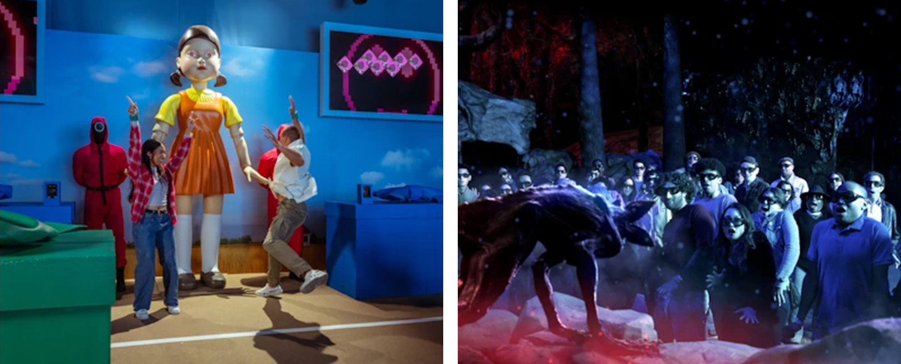

콘텐츠의 오프라인 확장은 새로운 현상이 아니다. 영화 캐릭터 상품과 테마파크, 드라마 촬영지를 찾는 관광객은 이전에도 존재했다.
다만 최근에는 실제 공간에서의 경험이 일회성 홍보나 부가상품 판매를 넘어 중요한 IP 사업 영역으로 주목받고 있다.
파인과 길모어(Pine & Gilmore)는 1998년 『하버드 비즈니스 리뷰』에 기고한 글에서 상품·서비스와 구별되는 경제적 가치로
‘경험’을 제시했다.
기업이 소비자의 참여를 이끌고 기억에 남을 경험을 제공함으로써 새로운 가치를 창출할 수 있다는 주장이다.
작품 속 공간을 직접 걸어보거나 등장인물이 되어 미션을 수행하는 활동도 이런 관점에서 이해할 수 있다.
상품을 구매하는 과정의 즐거움을 넘어, 그 경험 자체가 소비의 대상이 되는 것이다.
그로부터 약 30년이 흐른 오늘날에는 디지털 환경의 변화가 이러한 경험의 의미를 더하고 있다.
일례로 PwC는 2026년 글로벌 엔터테인먼트·미디어 산업 전망에서 현실 공간에서 다른 사람들과 함께 경험하는
‘공유 현실(Shared Reality)’의 가치에 주목했다.
디지털 플랫폼은 그 경험을 발견하고 공유하는 통로이기도 하다.
온라인에서 작품을 접한 사람이 전시장을 찾고, 방문 경험을 SNS에 올리거나 새로운 모임을 조직할 수 있기 때문이다.
이처럼 온라인과 오프라인을 오가는 활동은 콘텐츠 IP가 수용자와 만나는 경로를 넓히고 있다.
OTT 사업자에게 이 변화는 더욱 직접적인 과제로 다가온다.
일례로 주요 시장에서는 가입자 증가세가 둔화하고, 여러 서비스를 함께 구독하면서 생기는
‘구독 피로’도 거론된다.
이에 따라 경쟁의 초점 또한 새로운 가입자를 모으는 일보다 기존 이용자와의 관계를 유지하고 이미 확보한 IP의 가치를 넓히는 쪽으로 옮겨 가고 있다.
화면 밖의 경험이 종영한 작품을 다시 불러내고, 이용자가 플랫폼과 작품에 애착을 갖게 만드는 수단이 될 수 있는 것이다.
콘텐츠 IP를 공간으로 옮기는 방식은 상설 시설 운영부터 상업시설·공공 공간의 기간 한정 전시, 여러 작품을 묶은 행사까지 다양하다.
이들 사업이 공간에서 어떤 경험을 제공하고, 그 경험을 어디로 이어가려 하는지에 따라 서로 다른 성격을 띤다.
넷플릭스는 2025년 11월 미국 필라델피아 인근의 킹 오브 프러시아 쇼핑몰에 첫 넷플릭스 하우스를 열었고,
12월에는 갤러리아 댈러스에 두 번째 시설을 개장했다.
개장 당시 필라델피아에서는 <웬즈데이>의 기묘한 축제와 <원피스>를 소재로 한 방탈출 프로그램을,
댈러스에서는 <기묘한 이야기>와 <오징어 게임>을 활용한 몰입형 체험을 선보였다.
공간 입장은 무료지만, 주요 체험 프로그램은 별도의 요금을 받는다.
넷플릭스 하우스는 일정 기간 운영하고 철수하는 팝업스토어와 달리 상설 공간을 유지하면서 작품별 체험을 교체하는 방식으로 운영한다.
방문자는 드라마 속 세계를 눈앞에서 확인하는 데 그치지 않고, 게임이나 모험에 직접 참여한다.
관련 분석에서는 이를 상설 공간의 지속성과 콘텐츠의 가변성을 결합한
‘상설·순환형’ 공간 IP 비즈니스 모델로 규정한다.
OTT가 새로운 영상 목록을 선보이듯 오프라인에서도 다른 작품을 경험하고 다시 방문할 이유를 제공하는 셈이다.

[그림 1] 넷플릭스 하우스의 작품 IP 기반 몰입형 체험 현장
국내에서는 기존 시설과 외부 사업자의 협력을 활용한 사례가 눈에 띈다.
한국관광공사와 스튜디오드래곤이 2026년 9월 서울 하이커그라운드에서 마련한 K드라마 체험전시는
<도깨비>, <사랑의 불시착> 등 40여 편의 드라마를 소개한다.
올해 방영 10주년을 맞은 <도깨비> 전시관이 중심을 이루고, 관람객은 명대사와 음악, 소품을 접하는 동시에
취향에 맞는 촬영지와 여행 코스를 추천받을 수 있다.
무료로 운영되는 이 전시에는 개막 한 달도 되지 않아 1만 명 이상이 다녀갔다.
작품을 떠올리게 하는 경험이 전시장에 머무르지 않고 실제 여행으로 이어지도록 기획한 것이다.
웹툰 사업자들도 수용자들과의 새로운 접점을 찾고 있다.
레진엔터테인먼트는 서로 다른 14개 웹툰의 캐릭터를 가상의 프로젝트 그룹
‘스파클즈(SPAKLZ)’로 구성하고,
2026년 5월 서울 성수동에서 공연장과 백스테이지를 콘셉트로 한 팝업스토어를 열었다.
오는 11월 20일 개최 예정인
‘위페스타(WEFESTA)’에서는
레진코믹스와 봄툰의 웹툰뿐 아니라 숏드라마 플랫폼
‘레진스낵’,
캐릭터챗 서비스 ‘티즈’ 등을 함께 선보일 계획이다.
한 작품을 좋아해 찾아온 방문객이 다른 캐릭터나 서비스와 만날 수 있도록 접점을 넓힌 방식이다.
이상의 세 사례는 운영 주체와 형태, 경험의 초점이 서로 다르지만,
콘텐츠에 대한 관심을 한 차례의 시청이나 구매에서 끝내지 않고 다음 경험으로 이어가려 한다는 점에서는 공통점을 갖는다
(아래 <표 1> 참조).
<표 1> 콘텐츠 IP의 오프라인 확장 사례 비교
| 사례 | 운영주체 | 운영형태 | 경험의 초점 | 이어지는 경험 |
|---|---|---|---|---|
| 넷플릭스 하우스 | OTT 플랫폼 (넷플릭스) |
상설 공간, 작품별 체험 교체 | 작품 세계 안에서 게임·모험에 참여 | 다른 작품 체험, 재방문 |
| K드라마 체험전시 | 공공기관·제작사 (한국관광공사·스튜디오드래곤) |
기간 한정, 공공 공간 | 명대사·음악·소품 감상, 취향에 맞는 촬영지 추천 | 촬영지 여행 |
| 스파클즈·위페스타 | 웹툰 사업자 (레진엔터테인먼트·키다리스튜디오) |
기간 한정 팝업·축제 | 여러 작품의 캐릭터와 서비스를 한곳에서 경험 | 다른 작품과 서비스 이용 |
<표 1> 콘텐츠 IP의 오프라인 확장 사례 비교
(출처: 보도 자료 및 언론 보도를 바탕으로 저자 정리)
같은 오프라인 공간을 방문하더라도 수용자가 얻는 경험은 각기 다르다.
작품 속 배경을 둘러보는 데 만족하는 이가 있는가 하면 직접 미션을 수행하거나 다른 팬과 교류하는 데 더 큰 즐거움을 느끼는 사람도 있다.
2025년 서울 신촌에서 열린 웹소설 <괴담에 떨어져도 출근을 해야 하는구나>(이하 <괴담출근>)의 체험형 전시는
관람객이 주인공의 시점에서 지하철과 사무실, 편의점 등을 이동하며 미션을 수행하도록 만들었다.
편의점 상품의 바코드를 찍으면 작품 속 에피소드를 떠올리게 하는 영수증이 출력되기도 했다.
얼리버드 예매가 10분 만에, 일반 예매가 1시간 만에 매진될 만큼 관심도 컸다.
독자가 문자로 읽으며 상상했던 공간과 사건이 눈앞에 펼쳐졌고,
관람객은 그 공간에서 이야기의 규칙에 따라 행동하며 원작을 읽을 때와는 다른 감각으로 작품의 세계를 경험할 수 있었다.
그렇다고 참여가 반드시 기업이 마련한 프로그램 안에서만 이루어지는 것은 아니다.
글의 시작에서 소개한 치이카와의
‘토벌’ 모임이 대표적인 예다.
이 같은 모임에서 수용자들은 서로 잘 알지 못해도 같은 콘텐츠를 좋아한다는 이유만으로 함께 시간을 보내고 일시적인 연결감을 느낄 수 있다.
개인의 취향을 중심으로 맺어지는 이런 느슨한 관계 역시 오프라인 활동의 즐거움을 이루는 요소다.
여기서 중요한 것은 기업이 기획한 체험과 수용자가 실제로 만들어내는 경험이 반드시 일치하지 않는다는 사실이다.
전시의 미션이나 상품은 참여의 계기를 제공하지만, 방문객이 무엇을 기억하고 누구와 경험을 공유할지는 미리 정해둘 수 없다.
기업의 기획이 끝나는 지점에서 수용자들의 새로운 활동이 시작되는 셈이다.
더욱이 참여가 항상 구매로 이어진다고 보기도 힘들다.
온라인 후기에서는 매장을 둘러보고 사진만 남긴 채 가격 부담으로 구매를 망설였다는 이야기도 어렵지 않게 찾을 수 있다.
반대로 한정판 상품과 구매 특전이 반복 구매나 예약 경쟁의 부담을 낳기도 한다.
앞서 소개한 <괴담출근> 전시에서도 일정 금액 이상 구매 시 특전이 제공되었고, 하루에 수십만 원을 썼다는 방문객이 있었다.
따라서 방문객 수와 판매액만으로 오프라인 경험의 의미를 모두 설명할 수는 없다.
대안적으로 방문 이후 작품을 다시 찾거나 다른 팬들과 교류를 이어가는 활동도 살펴야 한다.
이는 OTT 사업자에게 구독자 수와 시청 시간만으로는 드러나지 않는 수용자와의 관계를 읽어낼 새로운 관점이 필요하다는 뜻이다.
콘텐츠 IP의 오프라인 확장에는 각기 다른 출발점이 있다.
넷플릭스도 상설 공간을 열기 전에 <브리저튼>의 무도회와 <오징어 게임>의 참여형 게임 등 40여 종류의 체험 프로그램을 세계 각지에서 선보인 바 있다.
넷플릭스에 따르면 300개 도시에서 진행된 450차례의 체험에 누적 1,000만 명 이상이 방문했다고 한다.
다양한 형식을 시도하며 수용자의 반응을 확인한 경험이 상설 사업의 토대가 된 것이다.
규모는 달라도 작은 실험을 통해 가능성을 살피는 접근은 중소 사업자에게도 참고할 만하다.
가장 중요한 출발점은 수용자를 이해하려는 시도다.
기존 팬들이 어떤 장면과 캐릭터를 기억하고 공유하는지, 아직 작품을 접하지 않은 사람들이 어떤 놀이와 음식, 여행에 관심을 두는지 살피다 보면 콘텐츠와 연결할 뜻밖의 접점을 발견할 수 있을 것이다.
오늘날과 같이 콘텐츠가 넘쳐나는 환경에서는 작품을 좋아할 사람들을 찾아가 일상 속에서 만날 기회를 마련하는 일이 중요해진다.
또한 이러한 관찰이 실제 사업 기획과 연결되어야 한다.
예를 들어 작품 속 인상적인 대사나 소품으로 작은 체험을 만들고, 기존 상업시설이나 공공 공간을 활용해 수용자의 반응을 확인하는 기회를 떠올려볼 수 있다.
이후 호응이 있다면 지역 사업자나 다른 제작사와 협력해 경험의 범위를 넓히는 것이다.
전시나 굿즈, 체험으로 확장할 때 필요한 IP의 2차 활용 권리를 사전에 확인해야 함은 물론이다.
여기에 더해 팬들의 자발적인 활동을 대하는 방식도 달라질 필요가 있다.
사업자가 작품의 특성을 살려 만남과 참여의 계기를 사전에 마련할 수도 있고,
팬들이 스스로 조직한 모임에 장소나 협력 기회를 제공하는 방식으로 사후에 지원할 수도 있다.
중요한 것은 기업이 모든 활동을 관리하려 하기보다 수용자의 선택을 살피면서 필요한 지원을 조정하는 일이다.
공개된 팬덤 활동의 흐름이나 동의를 받아 수집한 방문객의 의견은 다음 행사뿐 아니라 새로운 콘텐츠를 기획할 때도 참고할 수 있다.
다만 이러한 관찰이 개인의 활동을 과도하게 추적하거나 팬덤의 자율성을 침해하는 방식이 되지 않도록 주의가 필요하다.
정책 지원 역시 전용 공간을 조성하는 데만 집중할 필요는 없다.
앞서 살펴본 ‘K드라마 체험전시’는
공공기관이 공간과 관광 연계를 맡고 제작사가 IP를 제공한 협력 사례다.
이 같은 공공 공간의 전시를 관광 행사와 연계해 정례화하고,
국내외에서 관심을 얻은 중소 제작사의 IP에도 문을 열어 둔다면 개별 기업이 상설 공간의 비용과 위험을 홀로 떠안지 않고도 수용자의 반응을 확인할 수 있게 된다.
민간의 시도에서도 아이디어를 얻을 수 있다.
일본의 ‘고토치 키티’는 헬로키티를 각 지역의 특산물과 문화에 결합해 여행 기념품으로 선보이는 라이선싱 상품으로
캐릭터와 지역이 서로의 매력을 높이는 방식을 보여준다.
이러한 사례는 콘텐츠와 관광, 음식, 패션, 유통의 접점을 발굴하고 서로 다른 사업자가 협력하도록 연결하는 일이 정책의 몫이 될 수 있음을 시사한다.
비단 요즘이 아니더라도 팬들이 콘텐츠를 자신만의 방식으로 즐겨온 역사는 길다.
달라진 것은 취향에 맞는 작품을 발견하고 낯선 사람과도 쉽게 연결될 수 있는 환경이며,
오프라인은 그 관심이 실제 만남과 활동으로 이어지는 장소가 된다.
기업이 수용자의 선택을 모두 예측하거나 직접 기획할 수는 없을 것이다.
대신 사람들이 어떤 콘텐츠를 좋아하고 어떤 경험을 원하는지 꾸준히 살피면서 참여의 기회를 마련하고,
자발적으로 형성된 활동이 이어질 여건을 지원하는 것은 가능하다.
작품과 캐릭터에 대한 애착, 팬들 사이의 교류, 다른 콘텐츠와 지역으로 넓어지는 관심은 모두 새로운 사업 기회를 발견할 단서가 된다.
결국 콘텐츠 IP의 지속 가능한 성장은 새로운 작품을 공급하는 것만으로 이루어지지 않는다.
그보다 수용자가 작품을 일상에서 다양한 방식으로 경험하고, 그 경험을 다른 사람과의 관계로 이어갈 수 있도록 만드는 데 성장의 기회가 달려 있다.
참고문헌
- 공태윤(2026, 10, 16). 키다리스튜디오, 여성향 콘텐츠 축제 ‘2026 위페스타’ 11월 개최. <한국경제>.
- 권혜미(2025, 11, 3). 웹툰 IP, 체험형 팝업으로 오프라인 시장 키운다. <전자신문>.
- 김가영(2026, 9, 21). “K드라마 직접 체험”…스튜디오드래곤, 한국관광공사와 전시 개최. <이데일리>.
- 김혜진(2026, 10, 31). “같이 토벌하실 분?”…치이카와에 빠진 2030, 이곳서 모인다는데. <매일경제>.
- 신익수(2026, 10, 11). 나의 최애 K드라마 … 명장면 보고 촬영현장 여행 떠나요. <매일경제>.
- 유지희(2025, 10, 16). “오늘은 40만원 썼네요” 2030 난리…신촌에 무슨 일이 [현장+]. <한국경제>.
- 이경탁(2025, 9, 26). “도망쳐!” 신촌 한복판이 카카오페이지 인기 웹소설 ‘괴담출근’ 속으로. <조선비즈>.
- 전창의(2026). OTT 플랫폼의 공간 기반 콘텐츠 IP 비즈니스 모델 연구: 넷플릭스 하우스를 중심으로. <문화산업연구>, 26(3), pp. 213–223.
- 최현승(2026, 6, 10). 레진엔터, ‘스파클즈 2026 월드투어 IN 서울’ 팝업스토어 성료. <머니투데이>.
- Netflix(2025, 6, 17). Netflix House To Open In Philadelphia & Dallas Late 2025; Expands To Las Vegas Strip In 2027. <Netflix Investor Relations>.
- Netflix(2026, 2, 27). Netflix House Dallas and Philadelphia Are Now Open — Welcome to Our Home! <Netflix Tudum>.
- Pine, B. J. II & Gilmore, J. H.(1998). Welcome to the Experience Economy. <Harvard Business Review>, 76(4), pp. 97–105.
- PwC(2026). <Global Entertainment & Media Outlook 2026–2030>.
참고사이트
- あすなろ舎(아스나로샤). 「ご当地キティ(고토치 키티)」. (접속일: 2026. 11. 2.)